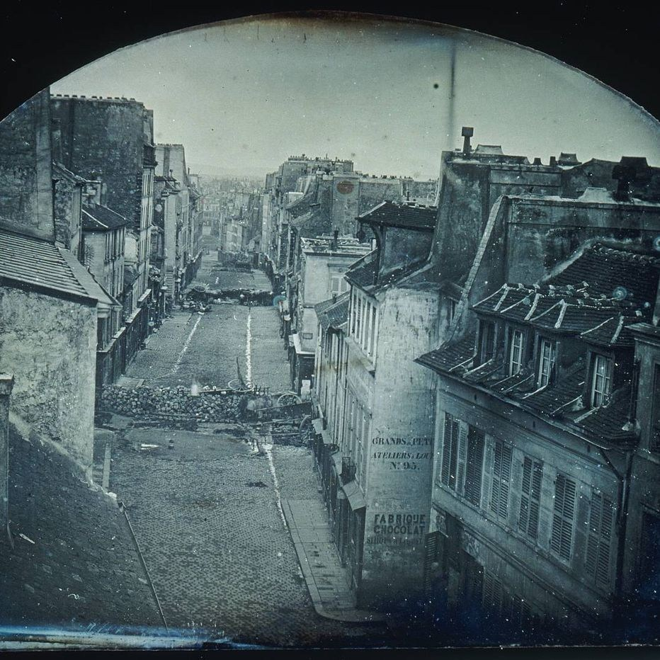

01Печать до революции
К 1848 году французская печать жила под давлением сентябрьских законов 1835 года. Они увеличили денежный залог (cautionnement), который обязан был внести издатель политической газеты, ужесточили наказания за оскорбление короля и подрыв монархического строя. К этому добавлялся гербовый сбор. В результате политическая газета оставалась дорогим предприятием, а подписка стоила крупных денег.
Оппозиция действовала несмотря на это. Умеренно-республиканский Le National, радикальная La Réforme Ледрю-Роллена и Флокона, фурьеристская La Démocratie pacifique, газета рабочих L'Atelier и массовая La Presse Эмиля де Жирардена с её дешёвой подпиской и рекламой формировали критическую публичную сферу. Банкетная кампания 1847 – 1848 годов, ставшая прологом революции, во многом опиралась на эти издания.
02Февраль: газеты на баррикадах
Запрет банкета в Париже 22 февраля вывел толпы на улицы. 24 февраля Луи-Филипп отрёкся от престола, было создано Временное правительство, в котором работали журналисты-редакторы: Арман Марраст из Le National и Фердинан Флокон из La Réforme. Для них свобода печати была не абстрактным принципом, а личным и политическим опытом.
Правительство в первые же недели отменило залог и гербовый сбор для периодики. Одновременно оно издавало собственный официальный листок, Bulletin de la République, чтобы объяснять населению свои решения. Печать перестала быть привилегией тех, кто может внести залог.
03Взрыв периодики
После отмены ограничений в Париже за несколько недель возникло почти 300 новых газет, а в провинции примерно столько же (подсчёт историка А.-К. Амбруаз-Рандю). Среди них были республиканские и социалистические издания: Le Peuple constituant Фелисите де Ламенне, Le Représentant du peuple Пьера-Жозефа Прудона, листки Распая, возрождённый Le Père Duchesne. Многие выходили недолго и небольшими тиражами, но обсуждали вопросы труда, собственности, женского равноправия, организации государства.
Рядом с политической прессой росла клубная пресса и политическая карикатура. Рабочие, ремесленники, мелкие служащие впервые стали не только читателями, но и авторами. Газета превратилась в средство политического обучения населения, которое только получило всеобщее избирательное право.
04Июнь 1848: поворот
Закрытие национальных мастерских привело к восстанию парижских рабочих 23 – 26 июня 1848 года. Власть передали генералу Кавеньяку, в Париже ввели осадное положение. Под него попали и газеты: были приостановлены или запрещены десятки изданий, включая Le Peuple constituant и Le Représentant du peuple. Редакторов арестовывали, в том числе Эмиля де Жирардена, главу La Presse.
Закон от 9 августа 1848 года вернул залог для политических газет, а закон от 11 августа ввёл наказания за призывы к ненависти между гражданами и за нападки на собственность и семью. Революционная свобода фактически продлилась менее полугода. Та же логика позже определила политику Второй республики в целом.

05От республики к империи
Конституция ноября 1848 года заявила о свободе печати, однако закон от 16 июля 1850 года, известный по поправке Рианси, обложил небольшим налогом роман с продолжением и ввёл обязательную подпись под статьями. Первое ударило по финансам массовых газет, второе по свободе высказываний: подпись делала автора досягаемым для суда.
После переворота 2 декабря 1851 года Луи-Наполеон Бонапарт установил режим предупреждений. Декрет 17 февраля 1852 года ввёл административный надзор: газеты стали зависеть от разрешения и от воли префектов, система административных предупреждений позволяла приостанавливать и закрывать издания. Французская печать вошла в период, который историки называют авторитарной империей.
06Цифры и портрет новой прессы
Всплеск названий не означал, что все новые редакции получили устойчивую аудиторию. Иногда издание ограничивалось одним или несколькими номерами. Не хватало денег, регулярных продаж, бумаги и редакционного опыта. Десятки короткоживущих проектов важны как свидетельство политической активности, но их нельзя приравнивать к устойчивой ежедневной прессе.
Среди новых изданий была La Voix des femmes Эжени Нибуайе, выходившая с марта по июнь 1848 года. В ней обсуждали образование, труд и гражданское положение женщин. Политическое расширение читательской среды не устранило неравенство: всеобщее избирательное право, введённое республикой, распространялось на мужчин.
07Какие газеты что предлагали
Республиканская печать делилась на несколько направлений. Умеренные республиканцы, группировавшиеся вокруг Le National, ориентировались на политическую демократию без глубоких социальных преобразований. Радикалы из La Réforme требовали социальных реформ и всеобщего избирательного права. Социалисты, к которым относились сторонники Фурье (La Démocratie pacifique), Луи Блана, Прудона и Кабе, обсуждали организацию труда, кредит, собственность.
Консервативные газеты, такие как Journal des débats и Le Constitutionnel, приняли республику как свершившийся факт и в основном поддержали партию порядка. После июня они занимали сторону власти и выступали за ограничения печати.
08Значение для истории журналистики
События 1848 года связывают свободу печати с вопросом о том, кто способен содержать редакцию. Снятие залога открывало вход новым группам, а его восстановление снова делало политическую газету дорогим предприятием. На судьбу издания одновременно влияли закон, деньги, читательский спрос и политические репрессии.
Закон о печати 29 июля 1881 года позднее отменил разрешительный порядок и залог. Однако путь к нему не был прямым: между революционным обещанием свободы и более устойчивым правовым режимом лежали десятилетия ограничений, послаблений и новых конфликтов.
Свобода весны 1848 года была реальной, но уязвимой. Число новых заголовков росло быстрее, чем возможности редакций выжить. Июньский кризис показал, как быстро политическая власть способна изменить правила газетного рынка.
Источники и материалы для чтения
- BnF. Газеты, выходившие в 1848 году ↗
- BnF. Основные законы и декреты о печати ↗
- А.-К. Амбруаз-Рандю. Les journaux du printemps 1848 ↗
- McMaster University. Коллекция документов революции 1848 года ↗
Книги и научная литература
- Bellanger C., Godechot J., Guiral P., Terrou F. Histoire générale de la presse française. T. 2: De 1815 à 1871. Paris: PUF, 1969.
- Agulhon M. 1848 ou l'apprentissage de la République, 1848 – 1852. Paris: Seuil, 1973.
- Маркс К. Классовая борьба во Франции с 1848 по 1850 г. // Маркс К., Энгельс Ф. Соч. 2-е изд. Т. 7.
- Tocqueville A. de. Souvenirs. Paris: Calmann Lévy, 1893.